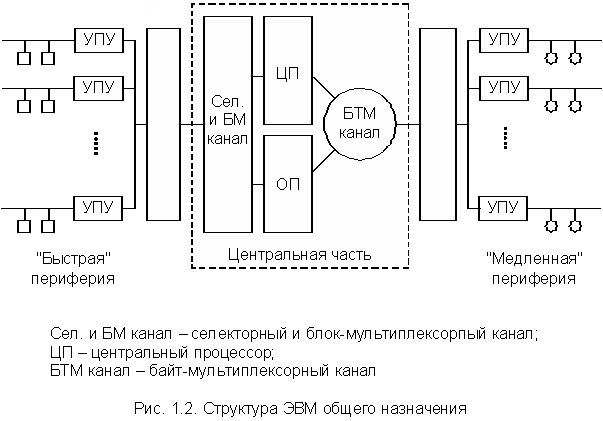

Любая ЭВМ обладает определенными характеристиками, которые описывают возможности обработки информации, выполнения арифметических и логических операций, организации совместной работы устройств машины и т.д.
Требуемые характеристики обеспечиваются аппаратными и программными средствами. Некоторые характеристики приобретаются на основе электронного и электромеханического оборудования, например, арифметико-логическое устройство (АЛУ).
Другие характеристики реализуются с помощью программных средств.
Так, например, ЭВМ может не иметь аппаратно реализованной операции извлечения корня. Но если есть программа извлечения корня, то существующие аппаратные средства могут выполнить эту операцию. Причем, с точки зрения пользователя, ЭВМ приобретет свойство вычисления корня.
Следует иметь в виду, что с помощью аппаратных средств соответствующие функции ЭВМ выполняются значительно быстрее, чем программным путем, но при этом ЭВМ становится сложнее и дороже. В связи с этим в ЭВМ с достаточно простыми процессорами стремятся как можно больше функций реализовать программным путем, а в мощных ЭВМ для повышения быстродействия – по максимуму использовать аппаратные средства.
Наиболее важными характеристиками ЭВМ являются эффективность и быстродействие. Они должны быть высокими при умеренных аппаратных затратах и стоимости.
Система программного (математического) обеспечения – это комплекс программных средств, в котором можно выделить операционную систему, комплект программ технического обслуживания и пакеты прикладных программ. На рис. 1.1 изображена упрощенная структура вычислительной системы как совокупности аппаратных и программных средств.
Операционная система (ОС) – это центральная и важнейшая часть программного обеспечения ЭВМ, предназначенная для эффективного управления вычислительным процессом, планирования работы и распределения ресурсов ЭВМ, автоматизации процесса подготовки программ и организации их выполнения при различных режимах работы машины, облегчения общения оператора и пользователя с машиной.
ОС состоит из программ, относящихся к двум большим группам.
Управляющие программы осуществляют управление работой устройств ЭВМ, т.е. координируют работу устройств в процессе ввода, подготовки и выполнения других программ.
Обрабатывающие программы осуществляют работу по подготовке новых программ для ЭВМ и исходных данных для них, например, сборку отдельно транслируемых модулей в одну или несколько исполняемых программ, работы с библиотеками программ, перезаписи массивов информации между ВП и ОП и т.д.
ОС в большинстве случаев являются универсальными и не учитывают особенности конкретных аппаратных средств. В современных ЭВМ для адаптации универсальной ОС к конкретным аппаратным средствам используют аппаратно-ориентированную часть операционной системы, которая в персональных компьютерах называется BIOS (Basic Input / Output System – базовая система ввода/вывода).
Следует иметь в виду, что оператор и пользователь не имеют прямого доступа к аппаратным средствам ЭВМ. (В частном случае, например при работе с персональным компьютером, оператор и пользователь являются одним и тем же лицом.) Все связи осуществляются только через ОС, обеспечивающую определенный уровень общения человека и машины. А уровень общения определяется в первую очередь уровнем языка, на котором оно происходит. На схеме представлена приближенная иерархия таких языков.
Проблемно-ориентированный язык– это язык, строго ориентированный на какую-либо проблему (моделирование сложных технических и экономических систем, САПР самых различных направлений, задачи анимации и т.д.).
Процедурно-ориентированный – это язык, ориентированный на выполнение общих процедур переработки данных (Фортран, Паскаль, Бейсик и т.д.).
Машинный язык – это самый нижний уровень языка. Команды записываются в виде двоичных кодов. Адреса ячеек памяти – абсолютные. Программирование очень трудоемко.
Ассемблер – это язык более высокого уровня, использующий мнемокоды (т.е. команды обозначаются буквенными сочетаниями). Запись программы ведется с использованием символических адресов, т.е. вместо численных значений адреса используются имена, за исключением первого оператора программы, который жестко привязан к физическому адресу. (Вообще, более правильно говорить язык ассемблера, поскольку Ассемблер – служебная программа, преобразующая символические имена команд и символические адреса в команды в машинном коде и числовые адреса.)
Макроязык – в первом приближении его можно определить как язык процедур, написанных на языке ассемблера, т.е. когда вместо целого комплекса команд (которые часто встречаются) используется только имя (название) этого комплекса.
Язык ОС – это язык, на котором оператор может выдавать директивы ОС, вмешиваться в ход вычислительного процесса.
Пакет программно-технического обслуживания предназначен для уменьшения трудоемкости эксплуатации ЭВМ. Эти программы проводят тестирование работоспособности ЭВМ и ее отдельных устройств, определяют места неисправностей.
Пакеты прикладных программ представляют собой комплексы программ для решения определенных, достаточно широких классов задач (научно-технических, планово-экономических), а также для расширения функций ОС (управление базами данных, реализация режимов телеобработки данных, реального времени и др.).
Все это, как уже отмечалось, в совокупности с аппаратными средствами составляет вычислительную систему. Причем при создании новых ЭВМ разработка аппаратного и программного обеспечения производится одновременно. В настоящее время программное обеспечение – такой же вид промышленной продукции, как и сама ЭВМ, причем его стоимость зачастую дороже аппаратной части.
Сложность современных вычислительных систем (ВС) привела к возникновению понятия архитектуры ВС. Это понятие охватывает комплекс общих вопросов построения ВС, существенных в первую очередь для пользователя, интересующегося главным образом возможностями ЭВМ, а не деталями ее технического исполнения. К числу таких вопросов относятся вопросы общей структуры, организации вычислительного процесса и общения пользователя с машиной, вопросы логической организации представления, хранения и преобразования информации и вопросы логической организации совместной работы различных устройств, а также аппаратных и программных средств машины.
Выше рассматривались три понятия: аппаратные средства, программное обеспечение и архитектура ЭВМ. Рассмотрим коротко этапы развития ЭВМ за последние 50 лет с точки зрения этих понятий, составляющих основу классификации ЭВМ по поколениям.
Ранее отмечалось, что ближайшими прототипами современной ЭВМ можно считать машины "ЭДВАК" и "ЭДСАК", построенные в Англии и США в 1949-1950 годах. С начала 50-х годов началось массовое производство ЭВМ различных типов, которые сейчас принято относить к ЭВМ первого поколения. Следует иметь в виду, что поколения ЭВМ не имеют четких временных границ. Элементы каждого нового поколения ЭВМ разрабатывались и опробовались на ЭВМ предыдущего поколения.
ЭВМ этого поколения строилось на дискретных элементах и вакуумных лампах, имели большие габариты, массу, мощность, обладая при этом малой надежностью. Основная технология сборки – навесной монтаж. Они использовались в основном для решения научно-технических задач атомной промышленности, реактивной авиации и ракетостроения.
Увеличению количества решаемых задач препятствовали низкая надежность и производительность, а также чрезвычайно трудоемкий процесс подготовки, ввода и отладки программы, написанной на языке машинных команд, т.е. в форме двоичных кодов. Машины этого поколения имели быстродействие порядка 10-20 тысяч операций в секунду и ОП порядка 1К (1024 слова). В этот же период появились первые простые языки для автоматизированного программирования.
В качестве элементной базы использовались дискретные полупроводниковые приборы и миниатюрные дискретные детали. Основная технология сборки – одно- и двухсторонний печатный монтаж невысокой плотности. По сравнению с предыдущим поколением резко уменьшились габариты и энергозатраты, возросла надежность. Возросли также быстродействие (приблизительно 500 тысяч оп/с) и объем оперативной памяти (16-32К слов). Это сразу расширило круг пользователей, а, следовательно, и решаемых задач. Появились языки высокого уровня (Фортран, Алгол, Кобол) и соответствующие им трансляторы. Были разработаны служебные программы для автоматизации профилактики и контроля работы ЭВМ, а также для лучшего распределения ресурсов при решении пользовательских задач. (Задача экономии времени процессора и ОП осталась, как и в первом поколении).
Все эти вышеперечисленные служебные программы оформились в ОС, которая первоначально просто автоматизировала работу оператора: ввод текста программы, вызов нужного транслятора, вызов необходимых библиотечных программ, размещение программ в основной памяти и т.д. Теперь вместе с программами и исходными данными вводилась целая инструкция о последовательности обработки программы и требуемых ресурсах.
Совершенствование аппаратного обеспечения, построенного на полупроводниковой базе, привело к тому, что появилась возможность строить в ЭВМ помимо центрального (основного) процессора еще ряд вспомогательных. Эти процессоры управляли всей периферией, в частности устройствами ввода/вывода, избавляли от вспомогательной работы центральный процессор. Одновременно совершенствовались и ОС. Это позволило на ЭВМ второго поколения реализовать режим пакетной обработки программ, а также режим разделенного времени. Последний был необходим для параллельного решения нескольких задач управления производством и организации многопользовательского режима через дисплейные станции. В машинах второго поколения широко использовались ОП на ферритовых кольцах (так называемые кубы памяти). Все это позволило поднять производительность ЭВМ и привлечь к ней массу новых пользователей.
В качестве элементной базы использовались интегральные схемы малой интеграции с десятками активных элементов на кристалл, а также гибридные микросхемы из дискретных элементов. Основная технология сборки – двухсторонний печатный монтаж высокой плотности. Это сократило габариты и мощность, повысило быстродействие, снизило стоимость универсальных (больших) ЭВМ. Но самое главное – появилась возможность создания малогабаритных, надежных, дешевых машин – миниЭВМ. МиниЭВМ первоначально предназначались для замены аппаратно-реализуемых контроллеров в контурах управления различных объектов и процессов (в том числе и ЭВМ). Появление миниЭВМ сократило сроки разработки контроллеров, поскольку вместо разработки сложных логических схем требовалось купить миниЭВМ и запрограммировать ее надлежащим образом. Универсальное устройство обладало избыточностью, однако малая цена и универсальность периферии оказались большим плюсом, обеспечившим высокую экономическую эффективность.
Но вскоре потребители обнаружили, что после небольшой доработки на миниЭВМ можно решать и вычислительные задачи. Простота обслуживания новых машин и их низкая стоимость позволили снабдить подобными вычислительными машинами небольшие коллективы исследователей, разработчиков, учебные заведения и т.д. В начале 70-х гг. с термином миниЭВМ уже связывали два существенно различных типа вычислительной техники:
Успехи микроэлектроники позволили создать БИС и СБИС, содержащие десятки тысяч активных элементов. Одновременно уменьшались и габариты дискретных электронных компонентов. Основной технологией сборки стал многослойный печатный монтаж. Это позволило разработать более дешевые ЭВМ с большой ОП. Стоимость одного байта памяти и одной машинной операции резко снизилась. Но затраты на программирование почти не сократились, поэтому на первый план вышла задача экономии человеческих, а не машинных ресурсов.
Для этого разрабатывались новые ОС, позволяющие пользователю вести диалог с ЭВМ, что облегчало работу пользователя и ускоряло разработку программ. Это потребовало, в свою очередь, совершенствовать организацию одновременного доступа к ЭВМ целого ряда пользователей, работающих с терминалов.
Совершенствование БИС и СБИС привело в начале 70-х гг. к появлению новых типов микросхем – микропроцессоров (в 1968 г. фирма Intel по заказу Дейта-Дженерал разработала и изготовила первые БИС микропроцессоров, которые предполагалось использовать как составные части больших процессоров).
В те годы под микропроцессором понималась БИС, в которой полностью размещен процессор простой архитектуры, т.е. АЛУ и УУ. В результате были созданы дешевые микрокалькуляторы и микроконтроллеры – управляющие устройства, построенные на одной или нескольких БИС, содержащие процессор, память и устройства сопряжения с датчиками и исполнительными механизмами. С совершенствованием технологии их производства и, следовательно, падением цен микроконтроллеры начали внедряться даже в бытовые приборы и автомашины.
В 70-е же годы появились первые микроЭВМ – универсальные вычислительные системы, состоящие из процессора, памяти, схем сопряжения с устройствами ввода/вывода и тактового генератора, размещенные в одной БИС (однокристальная микроЭВМ) или в нескольких БИС, установленных на одной печатной плате (одноплатные микроЭВМ).
Совершенствование технологии позволило изготовить СБИС, содержащие сотни тысяч активных элементов, и сделать их достаточно дешевыми. Это привело к созданию небольшого настольного прибора, в котором размещалась микроЭВМ, клавиатура, монитор, магнитный накопитель (кассетный или дисковый), а также схемы сопряжения с малогабаритным печатающим устройством, измерительной аппаратурой, другими ЭВМ и т.д. Этот прибор получил название персональный компьютер.
В 1976 г. была зарегистрирована компания Apple Comp (Стив Джекоб и Стефан Возняк), которая и начала серийный выпуск первых в мире персональных компьютеров "Макинтош".
Благодаря ОС, обеспечивающей простоту общения с этой ЭВМ больших библиотек прикладных программ, а также низкой стоимости персональный компьютер начал стремительно внедряться в различные сферы человеческой деятельности во всем мире. Об областях и целях его использования можно прочитать в многочисленных литературных источниках. По данным на 1985 год, общий объем мирового производства уже составил 200×106 микропроцессоров и 10×106 персональных компьютеров в год.
Что касается больших ЭВМ этого поколения, то происходит дальнейшее упрощение контакта человек-машина. Использование в больших ЭВМ микропроцессоров и СБИС позволило резко увеличить объем памяти и реализовать некоторые функции программ ОС аппаратными методами, например аппаратные реализации трансляторов с языков высокого уровня и т.п. Это сильно увеличило производительность ЭВМ, хотя несколько возросла и цена.
Характерным для крупных ЭВМ 4-го поколения является наличие нескольких процессоров, ориентированных на выполнение определенных операций, процедур или решение определенных классов задач. В рамках этого поколения создаются многопроцессорные вычислительные системы с быстродействием в несколько десятков или сотен миллионов операций/с и многопроцессорные управляющие комплексы повышенной надежности с автоматическим изменением структуры.
Примером вычислительной системы 4-го поколения является многопроцессорный комплекс "Эльбрус-2" с суммарным быстродействием 100×106 оп/с или вычислительная система ПС-2000, содержащая до 64 процессоров, управляемых общим потоком команд. При распараллеливании вычислительного процесса суммарная скорость достигает 200×106 оп/с. Подобные суперЭВМ развивают максимальную производительность только при решении определенных типов задач (под которые они и строились). Это, прежде всего, задачи сплошных сред, связанные с аэродинамическими расчетами, прогнозами погоды, силовыми энергетическими полями и т.д. Производство суперЭВМ во всем мире составляет в настоящее время десятки штук в год, и строятся они, как правило, "под заказ".
Характерной особенностью пятого поколения ЭВМ является то, что основные концепции этого поколения были заранее формулированы в явном виде. Задача разработки принципиально новых компьютеров впервые поставлена в 1979 году японскими специалистами, объединившими свои усилия под эгидой научно-исследовательского центра по обработке информации – JIPDEC. В 1981 г. JIPDEC опубликовал предварительный отчет, содержащий детальный многостадийный план развертывания научно-исследовательских и опытно-конструкторских работ с целью создания к 1991 г. прототипа ЭВМ нового поколения.
Указанная программа произвела довольно сильное впечатление сначала в Великобритании, а затем и в США. Под эгидой JIPDEC прошел ряд международных конференций, в частности – "Международная конференция по компьютерным системам пятого поколения" (1981 г.), на которых полностью оформился "образ компьютера пятого поколения". Были предложены концепции создания не только поколения ЭВМ в целом, но и вопросы архитектуры основных типов ЭВМ этого поколения, структуры программных средств и языков программирования, разработки наиболее перспективной элементной базы и способов хранения информации.
Следует отметить, однако, что оптимистические прогнозы японских специалистов не сбылись. До сих пор не создан компьютер, в полной мере удовлетворяющий требованиям, предъявляемым к компьютерам пятого поколения.
Прежде чем перейти к изучению дальнейшего материала, следует сделать некоторые замечания. Дело в том, что, несмотря на общие принципы функционирования всех ЭВМ, их конкретные реализации существенно различаются. Особенно это касается суперЭВМ, решающих весьма специфические задачи. Да и обычные серийные большие ЭВМ общего назначения работают, как правило, в составе вычислительных центров, и доступ к ним возможен только через терминалы. Кроме того, их архитектура, аппаратное и программное обеспечение достаточно сложны для первоначального изучения, поэтому в дальнейшем основное внимание будет уделено небольшим ЭВМ, построенным на базе микропроцессоров, в том числе персональным компьютерам. Это имеет смысл еще и потому, что ЭВМ, построенные на базе микропроцессорных комплектов, представляют наибольший интерес для современного инженера, поскольку непосредственно участвуют в работе систем автоматизации производственных процессов, обрабатывают данные научных экспериментов, принимают и обрабатывают потоки информации в каналах связи, решают небольшие расчетные инженерные задачи и т.д. В ряде случаев для решения конкретных задач пользователь сам на базе микропроцессорных комплектов создает специализированные контроллеры и ЭВМ.
Рассмотрим очень коротко основное отличие структур больших ЭВМ общего назначения и малых ЭВМ (миниЭВМ), появившихся в начале 70-х годов.
На первых этапах внедрения ЭВМ в деятельность человека решаемые задачи, в основном, можно было разделить на два больших класса:
Но вскоре потребители обнаружили, что после небольшой доработки на миниЭВМ можно решать и вычислительные задачи. Простота обслуживания новых машин и их низкая стоимость позволили снабдить подобными вычислительными машинами небольшие коллективы исследователей, разработчиков, учебные заведения и т.д. В начале 70-х гг. с термином миниЭВМ уже связывали два существенно различных типа вычислительной техники:
Для систем обработки данных важно иметь возможность ввода, хранения, обработки и вывода большого количества текстовой (алфавитно-цифровой) информации, которая представлена словами переменной длины. Кроме того, для таких систем важно наличие значительного числа периферийных запоминающих устройств, хранящих большое количество информации (накопители на дисках и лентах), а также высокопроизводительных устройств ввода и вывода данных.
Для решения этих двух типов задач первоначально строили ЭВМ, которые различались уже на уровне аппаратного обеспечения. Однако резкое расширение сферы использования ЭВМ, совершенствование аппаратного и программного обеспечения, расширение понятия научно-технических расчетов привели к стиранию границ между этими двумя типами задач, а, следовательно, и типами ЭВМ. В результате появились ЭВМ общего назначения (mainframe), которые стали выполнять основной объем вычислительных работ и машинной обработки информации в различных ВЦ и АСУ.
ЭВМ общего назначения универсальны и могут использоваться как для решения научно-технических задач численными методами, так и в режиме автоматической обработки данных в АСУ. Такие ЭВМ имеют высокое быстродействие, память большого объема, гибкую систему команд и способов представления данных, широкий набор периферийных устройств. Появление персональных компьютеров на некоторое время (3-4 года) снизило интерес к подобным ЭВМ, и их производство стало сокращаться. Однако уже к концу 80-х годов стало ясно, что персональные компьютеры не могут полностью заменить мэйнфреймы. В настоящее время многие фирмы (в том числе IBM) продолжают разрабатывать и выпускать новые модели мэйнфреймов, на долю которых, по мнению некоторых авторов, и приходится основной объем перерабатываемой в мире информации.
Для того чтобы понять радикальные отличия структуры первых микро- и миниЭВМ, появившихся в начале 70 годов, от структур основных типов ЭВМ, существовавших в то время – ЭВМ общего назначения, необходимо рассмотреть структуру типичных представителей этих ЭВМ (например, ЕС–ЭВМ), прототипами которых были машины IBM 360/370. Их быстродействие составляло от 200 тысяч оп/с (ЕС 1030) до 5000 тысяч оп/с (ЕС 1065) и более для старших моделей машин этого семейства. Характерной особенностью подобных ЭВМ было наличие большого количества как "быстрых", так и "медленных" периферийных устройств, которые функционировали параллельно с центральным процессором и требовали специальных средств управления. Упрощенная структура ЭВМ серии ЕС изображена на рис. 1.2.
Собственно обработка данных производилась в центральном процессоре (ЦП), содержащем АЛУ и УУ. Это самая быстродействующая часть ЭВМ, поэтому возникала проблема взаимодействия быстродействующего процессора с большим числом сравнительно медленно действующих периферийных устройств (ПУ). Для эффективного использования всего вычислительного комплекса требовалось организовать параллельную во времени работу ЦП и ПУ. Такой режим в ЭВМ общего назначения организовывался при помощи специализированных вспомогательных процессоров ввода/вывода, называемых каналами. Периферийные устройства связывались с каналами через собственные блоки управления (УПУ) – их часто называли контроллерами ПУ – и систему сопряжения, называемую интерфейсом.
